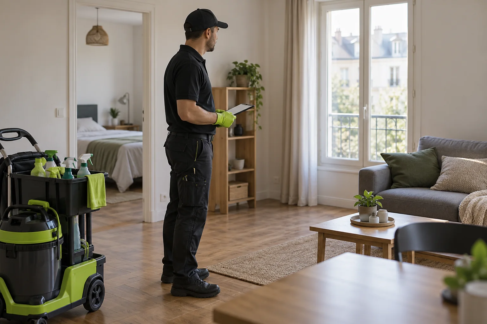
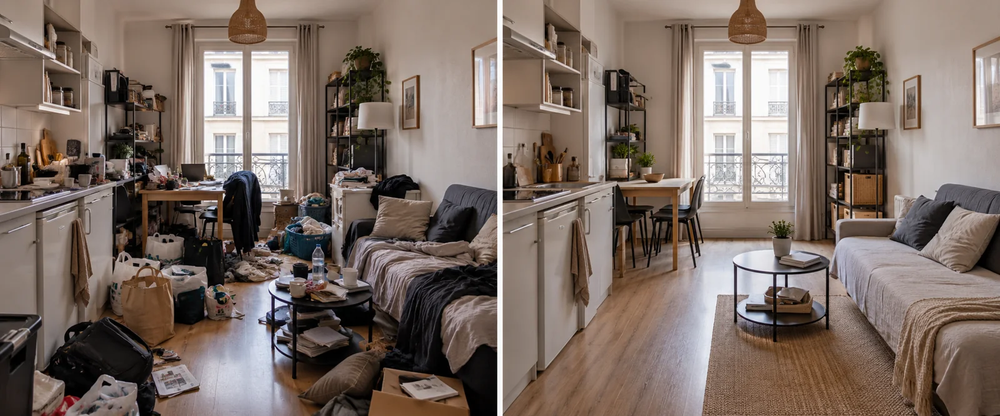

Signalement d’insalubrité : mairie, service d’hygiène et nettoyage du logement
Qui peut signaler
Un occupant, un voisin, un syndic, un bailleur, une association ou un travailleur social. Le signalement s’adresse en général au service d’hygiène de la ville ou à l’autorité sanitaire compétente.
Il est utile de joindre photos et dates.
Que se passe-t-il ensuite
Un agent peut visiter le logement et constater l’état des lieux. Selon ce qu’il observe, il peut demander des mesures au propriétaire : travaux, nettoyage, traitement. Les procédures varient selon les cas.
Pour les règles précises, renseignez-vous auprès de la mairie ou de l’ADIL.

Les obligations qui peuvent en résulter
Le propriétaire peut devoir réaliser des travaux, voire reloger les occupants dans certains cas. Un occupant peut être invité à remettre son logement en état.
Les détails dépendent du dossier : consultez un professionnel.
Le nettoyage, partie de la solution
Quand l’insalubrité vient de l’accumulation de déchets ou de la saleté, le débarras, le nettoyage et la désinfection règlent le problème sanitaire. Nous fournissons devis, facture et photos utiles au dossier.
Quand la cause est structurelle, il faut aussi des travaux.

Éviter d’en arriver là
Un entretien régulier, un signalement rapide au bailleur, des aides sociales pour les personnes fragiles évitent souvent la procédure. Le dialogue avec l’occupant reste la meilleure voie.
Nous pouvons intervenir avant qu’une procédure ne soit nécessaire.
Débarras logement insalubre à Paris 18e : nous contacter
Besoin d’une tarif nettoyage maison insalubre dans le 18e arrondissement ? Notre équipe se déplace à Paris 18e pour un débarras logement insalubre, y compris le week-end, avec un prix écrit avant les travaux.